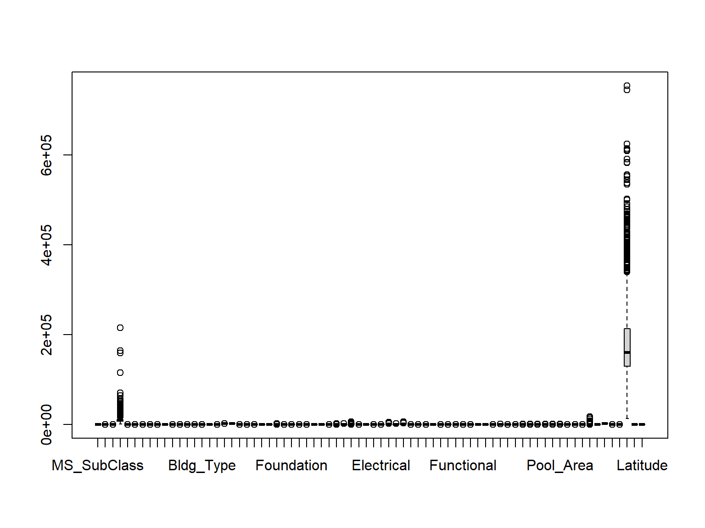
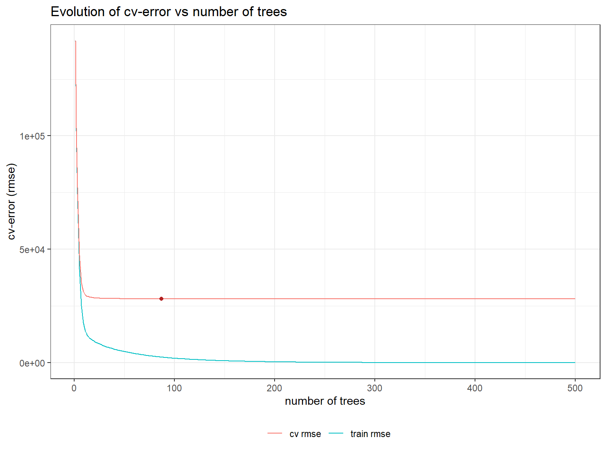
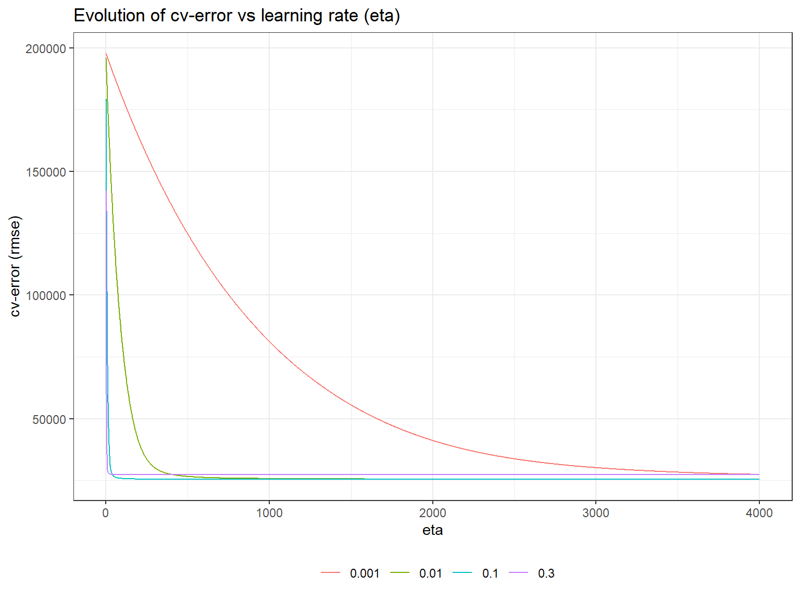

# Helper packages
library(dplyr) # for data wrangling
library(ggplot2) # for awesome plotting
library(modeldata) # for parallel backend to foreach
library(foreach) # for parallel processing with for loops
# Modeling packages
# library(tidymodels)
library(xgboost)
library(gbm)Decision Trees Lab 2b: Boosting
Introduction
This lab continues on the previous one showing how to apply boosting. The same dataset as before will be used
Appendix : Ames dataset
Packge AmesHousing contains the data jointly with some instructions to create the required dataset.
We will use, however data from the modeldata package where some preprocessing of the data has already been performed (see: https://www.tmwr.org/ames)
if(!require(modeldata))
install.packages("modeldata", dep=TRUE)
data(ames, package = "modeldata")The dataset has 74 variables so a descriptive analysis is not provided.
dim(ames)[1] 2930 74boxplot(ames)
Spliting the data into test/train
We split the data in separate test / training sets and do it in such a way that samplig is balanced for the response variable, Sale_Price.
# Stratified sampling with the rsample package
set.seed(123)
split <- rsample::initial_split(ames, prop = 0.7,
strata = "Sale_Price")
ames_train <- training(split)
ames_test <- testing(split)Fitting a boosted regression tree with xgboost
XGBoost Parameters Overview
The xgboost() function in the XGBoost package trains Gradient Boosting models for regression and classification tasks. Key parameters and hyperparameters include:
- Parameters:
params: List of training parameters.data: Training data.nrounds: Number of boosting rounds.watchlist: Validation set for early stopping.obj: Custom objective function.feval: Custom evaluation function.verbose: Verbosity level.print_every_n: Print frequency.early_stopping_rounds: Rounds for early stopping.maximize: Maximize evaluation metric.save_period: Model save frequency.save_name: Name for saved model.xgb_model: Existing XGBoost model.callbacks: List of callback functions. ### XGBoost Parameters Overview
Numerous parameters govern XGBoost’s behavior. A detailed description of all parameters can be found in the XGBoost documentation. Key considerations include those controlling tree growth, model learning rate, and early stopping to prevent overfitting:
- Parameters:
booster[default = gbtree]: Type of weak learner, trees (“gbtree”, “dart”) or linear models (“gblinear”).eta[default=0.3, alias: learning_rate]: Reduces each tree’s contribution by multiplying its original influence by this value.gamma[default=0, alias: min_split_loss]: Minimum cost reduction required for a split to occur.max_depth[default=6]: Maximum depth trees can reach.subsample[default=1]: Proportion of observations used for each tree’s training. If less than 1, applies Stochastic Gradient Boosting.colsample_bytree: Number of predictors considered at each split.nrounds: Number of boosting iterations, i.e., the number of models in the ensemble.early_stopping_rounds: Number of consecutive iterations without improvement to trigger early stopping. If NULL, early stopping is disabled. Requires a separate validation set (watchlist) for early stopping.watchlist: Validation set used for early stopping.seed: Seed for result reproducibility. Note: useset.seed()instead.
Test / Training in xGBoost
XGBoost Data Formats
XGBoost models can work with various data formats, including R matrices.
However, it’s advisable to use xgb.DMatrix, a specialized and optimized data structure within this library.
ames_train <- xgb.DMatrix(
data = ames_train %>% select(-Sale_Price)
%>% data.matrix(),
label = ames_train$Sale_Price
)
ames_test <- xgb.DMatrix(
data = ames_test %>% select(-Sale_Price)
%>% data.matrix(),
label = ames_test$Sale_Price
)Fit the model
set.seed(123)
ames.boost <- xgb.train(
data = ames_train,
params = list(max_depth = 2),
nrounds = 10,
)
ames.boost##### xgb.Booster
raw: 12.8 Kb
call:
xgb.train(params = list(max_depth = 2), data = ames_train, nrounds = 10)
params (as set within xgb.train):
max_depth = "2", validate_parameters = "1"
xgb.attributes:
niter
callbacks:
cb.print.evaluation(period = print_every_n)
# of features: 73
niter: 10
nfeatures : 73 Prediction and model assessment
ames.boost.trainpred <- predict(ames.boost,
newdata = ames_train
)
ames.boost.pred <- predict(ames.boost,
newdata = ames_test
)
train_rmseboost <- sqrt(mean((ames.boost.trainpred - getinfo(ames_train, "label"))^2))
test_rmseboost <- sqrt(mean((ames.boost.pred - getinfo(ames_test, "label"))^2))
paste("Error train (rmse) in XGBoost:", round(train_rmseboost,2))[1] "Error train (rmse) in XGBoost: 32937.58"paste("Error test (rmse) in XGBoost:", round(test_rmseboost,2))[1] "Error test (rmse) in XGBoost: 34377.13"Parameter optimization
Tree number
This is a critical parameter as far as adding new trees increases risk of overfitting.
boostResult_cv <- xgb.cv(
data = ames_train,
params = list(eta = 0.3, max_depth = 6, subsample = 1),
nrounds = 500,
nfold = 5,
metrics = "rmse",
verbose = 0
)
boostResult_cv <- boostResult_cv$evaluation_logWe aim at at the lowest number of trees that has associated a small cross-validation error.
ggplot(data = boostResult_cv) +
geom_line(aes(x = iter, y = train_rmse_mean, color = "train rmse")) +
geom_line(aes(x = iter, y = test_rmse_mean, color = "cv rmse")) +
geom_point(
data = slice_min(boostResult_cv, order_by = test_rmse_mean, n = 1),
aes(x = iter, y = test_rmse_mean),
color = "firebrick"
) +
labs(
title = "Evolution of cv-error vs number of trees",
x = "number of trees",
y = "cv-error (rmse)",
color = ""
) +
theme_bw() +
theme(legend.position = "bottom")
paste("Optimar number of rounds (nrounds):", slice_min(boostResult_cv, order_by = test_rmse_mean, n = 1)$iter)[1] "Optimar number of rounds (nrounds): 87"Learning rate
Importance of Learning Rate in Gradient Boosting
Alongside the number of trees, the learning rate (eta) is the most crucial hyperparameter in Gradient Boosting. It controls how quickly the model learns and thus influences the risk of overfitting. These two hyperparameters are interdependent: a lower learning rate requires more trees to achieve good results but reduces the risk of overfitting.
eta_range <- c(0.001, 0.01, 0.1, 0.3)
df_results_cv <- data.frame()
for(i in seq_along(eta_range)){
set.seed(123)
results_cv <- xgb.cv(
data = ames_train,
params = list(eta = eta_range[i],
max_depth = 6, subsample = 1),
nrounds = 4000,
nfold = 5,
metrics = "rmse",
verbose = 0
)
results_cv <- results_cv$evaluation_log
results_cv <- results_cv %>%
select(iter, test_rmse_mean) %>%
mutate(eta = as.character(eta_range[i]))
df_results_cv <- df_results_cv %>% bind_rows(results_cv)
}ggplot(data = df_results_cv) +
geom_line(aes(x = iter, y = test_rmse_mean, color = eta)) +
labs(
title = "Evolution of cv-error vs learning rate (eta)",
x = "eta",
y = "cv-error (rmse)",
color = ""
) +
theme_bw() +
theme(legend.position = "bottom")